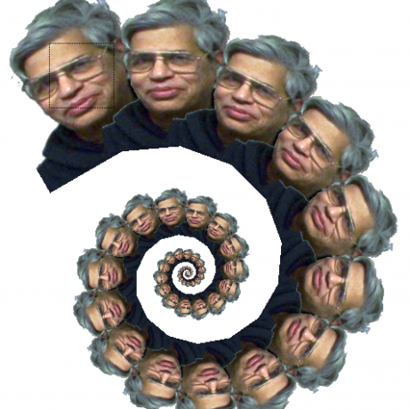

Welcome!
Rensselaer Center for Open Source
About this presentation

Other presentations
rcos.github.com/intro/presentations.html rcos.github.com/intro/smallgroups.htmlFaculty Advisors
 Moorthy

Goldschmidt

Wes Turner
Fall 2016 Coordinators
Seve

Kiana

Aaron
Fall 2016 Mentors
- Adrian Collado
- Andrew Kaiser
- Beverly Sihsobhon
- Brian Kelley
- Conner Foody
- Courtney Tambling
- James Grippo
- Jim Boulter
- John Behnke
- Richie Young
- Sarah Schattschneider
- Theo Browne
- Toshi Piazza
- Zefanya Putri
What is RCOS?
RCOS is a creative, intellectual and entrepreneurial outlet for students to use the latest open-source software platforms to develop applications that solve societal problems.
(that's our mission statement)
RCOS is anarchy
(but for real)
What does RCOS do for you
- Unique open-ended learning experience
- Gain valuable resume boosters
- Huge community of skilled open source developers
- Opportunity to work on awesome projects
- Credit (0-4)
Professor Moorthy
Structure : Members
Faculty
Coordinators/Mentors(Internal and External)
Members
Coordinators/Mentors(Internal and External)
Members
Structure : Members
Every member gets a mentor
Mentors are assigned this upcoming Monday
Ask your mentor first
You can always change mentors
Mentors are assigned this upcoming Monday
Ask your mentor first
You can always change mentors
Structure : Meetings
Small Group on Tuesday
Large Group on Friday
Large Group on Friday
Small Groups
- Lead by a small group of mentors
- Typically about 20 people to a small group
- Attendance is taken (2 absences are excused)
- Mentor freedom!
Large Groups
- Lead by coordinators
- Guest speakers!
- Attendance is taken (2 absencse are allowed)
- One large group presentation per team
Questions?
Getting started at RCOS
Observatory (rcos.io)
RCOS's homebrew project management system

Slack (rcos.slack.com)
RCOS's primary communication medium

0-credit SIS course
(CRN: 27931 CSCI 4965-01)
To reserve our rooms and get a roster
Github

Finding a project
github.com/exploreFinding a team (optional)
- Pitch Day
- Post on Slack
- Talk to your mentor
Start learning git (try.github.io)

Getting Help
- #helpdesk
- Slack
- Mentor (Both internal and external)
- Coordinator
- Faculty Member
How to be successful (and get an A!)
Below are guidelines and vary based on credit level
- Commit often (shoot for once a week)
- Tell us what you're up to (blog ~3 times a semester)
- Read the intro README for more details (see How to be Successful...)
- Full Grading Criteria Here
Goals for RCOS 2016
Get more contributions to external projects (projects created outside RCOS)
Increase rate of success of RCOS projects (but it's still okay to fail)
Increase longevity of RCOS projects
Questions?
What happens next?
Small Group Tuesday
Pitch day! next Friday
Message @aaron on slack with your slides by 11pm the night before
You MUST message Aaron with slides!
It's okay if you change projects later!
Slide Template

What do you do now?
- Get on rcos.io, slack and github
- Sign up on SIS (SRN 97169 CSCI-4963-01)
- Find a project
- Email slides
Who do I talk to for <blank>?